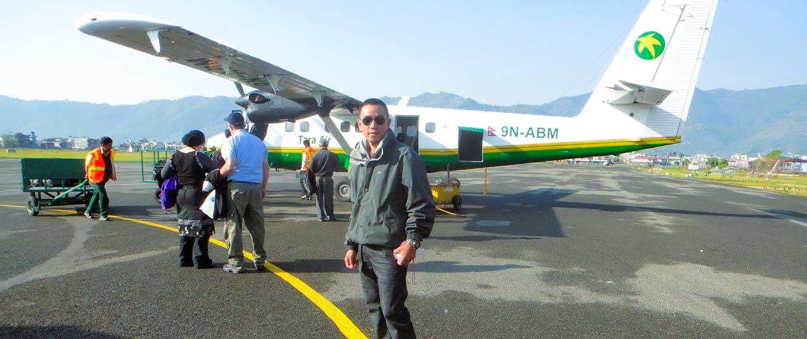
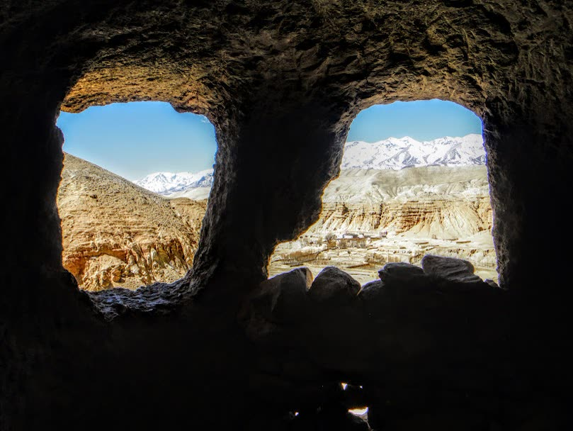
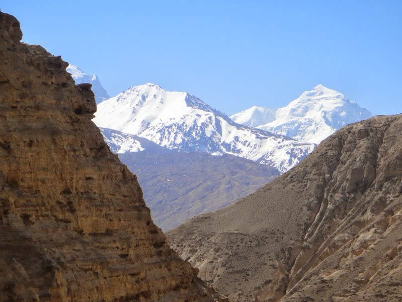
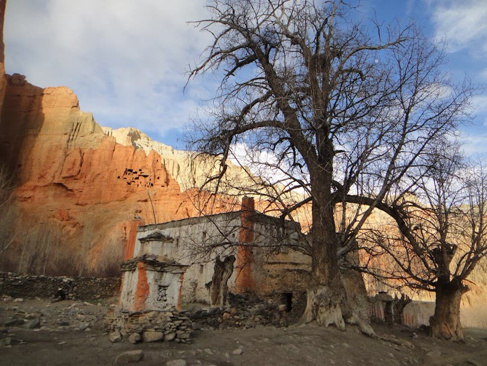
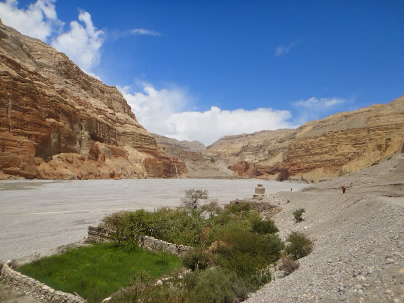
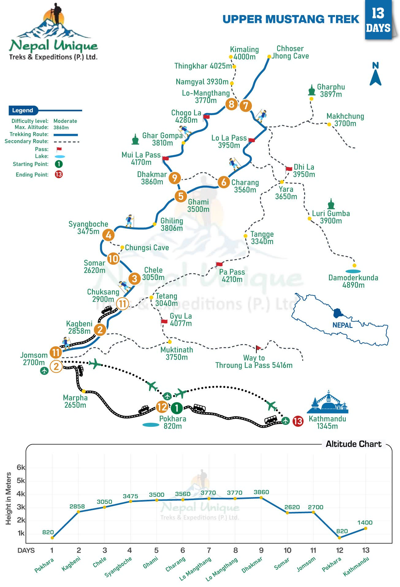

Upper Mustang Trek
of Upper Mustang Trek Discover the Upper Mustang Trek 2026 with a detailed itinerary and cost breakdown. Explore the hidden kingdom of Lo Manthang, ancient monasteries, and breathtaking Himalayan landscapes.





Key Trip Facts
Trek Overview
Trip Highlights
Overview of Upper Mustang Trek
Discover the Upper Mustang Trek 2026 with a detailed itinerary and cost breakdown. Explore the hidden kingdom of Lo Manthang, ancient monasteries, and breathtaking Himalayan landscapes. Plan your adventure with Nepal Unique Treks today. The Upper Mustang Trek is unique and adventurous, unlike any other trek in Nepal. It's a journey to the last kingdom of Tibetan culture in Nepal. Also known as the Last Forbidden Kingdom or Kingdom of Lo, the Upper Mustang has preserved the tradition of ancient Tibetan culture.
Only from the year 1992, the trekkers were allowed to visit this ancient Tibetan kingdom. And year to date, every trekker, whether it be domestic or international, requires a special permit to enter the area. This has allowed the community of the Mustang region to preserve its identity historical tradition and culture.
The journey to the Kingdom of Lo begins with a drive to Pokhara and then a flight to Jomsom. Starting the trekking from Jomsom, navigating through the scenic and rock trails, we visit the Muktinath Temple. Furthermore, trekking for a few days, all day in the rocky terrain along the river, we reach Lo Manthang. Exploring the nearby places and experiencing the local lifestyle of the people, we retraced our way back to Kathmandu.
Moreover, immerse yourself in exploring the scenic views of the snow-capped mountains, rocky terrains, landscapes, and many more. In addition, get a chance to explore the traditional Tibetan culture, lifestyle, and food.
To summarize, the Upper Mustang Trek is an adventurous as well as spiritual journey to the untapped Western Region of Nepal. Far away from the hustle and bustle of the city, the Western Region and its people will amaze you with the views as well as the hospitality. Create unforgettable moments on this journey with Nepal Unique Treks.
Why choose Nepal Unique Treks for this trek?
We provide an experience you won't soon forget at Nepal Unique Treks. We have been leading trekkers from all over the world for more than 20 years, guaranteeing smooth and trouble-free travel. Furthermore, as a government-approved trekking company, we provide safety, comfort, and first-rate service to make your Himalayan adventure genuinely unforgettable.
Our team of experienced guides has been navigating the challenging Himalayan terrain for over ten years and is government-certified. Moreover, they are highly knowledgeable about high-altitude treks, the local way of life, and the landscape. They also ensure that you stay informed, safe, and fully engaged in the experience. In addition, our guides are available to help you at every stage, whether you're facing challenging climbs, acclimating to higher elevations, or learning about local customs.
We create itineraries tailored to your needs, recognizing that every trekker has a unique pace and preference. We can customize a journey to fit your timetable, add extra days for acclimatization, or let you discover undiscovered treasures along the way. Our itineraries are carefully crafted to provide the perfect balance of adventure, safety, and cultural exposure.
Nepal Unique Treks handles every aspect of logistics, from obtaining permission to setting up the greatest lodging and food options. We also carefully choose tea houses and lodges to guarantee your comfort and provide you with friendly hospitality in the heart of the Himalayas. Our solid local ties also provide an additional degree of ease, enhancing the immersion and smoothness of your journey.
Permits required for Upper Mustang Trek
Authorities require permits for the Upper Mustang Trek to protect the region’s unique cultural and environmental heritage. Moreover, it helps the government officials to regulate tourism, and ensure that the local community benefits from the tourism industry. Without these permits, we are not allowed to enter the region.
Upper Mustang Restricted Area Permit:
This permit is required to enter the Upper Mustang region, which is a restricted area. The Department of Immigration in Kathmandu issues it, and they charge a higher cost compared to other trekking areas in Nepal.
Annapurna Conservation Area Permit (ACAP):
This permit is required for trekking in the Annapurna region, including parts of the Upper Mustang Trek. It helps support conservation efforts and ensures the maintenance of natural resources and wildlife in the region. It is valid for the entire Annapurna Conservation Area, which includes popular trekking destinations like Jomsom, Kagbeni, and Upper Mustang.
Trekkers’ Information Management System (TIMS) Card:
Although trekkers no longer need the TIMS card for the Upper Mustang region due to the restricted area permit, they are typically still required to obtain it for other trekking areas in Nepal. The card helps authorities keep track of trekkers and ensure safety in the trekking regions. Finally, Nepal Unique Treks will assist you in getting these permits hassle-free. For this, we will require a few documents from you. You can easily connect with us to know more about the details of obtaining the permits.
Why does the Upper Mustang Trek require trekking insurance?
Mustang is not a walk in the park. You are climbing high-altitude terrain, far from hospitals and towns. There are a few scenarios where things can go wrong in our journey. And, that is why insurance is the most: The insurance specifically includes emergency helicopter evacuation, which may be your only lifeline if you suffer from altitude sickness. The remote nature of Mustang means limited medical facilities, making insurance coverage for medical care and evacuation essential for your safety and peace of mind.
Mustang's unpredictable mountain weather can cause serious travel disruption, with snowstorms or gusty winds potentially leaving you stranded due to flight cancellations. A good insurance policy will take care of you from such unexpected delays and associated costs. Furthermore, the policy provides cover for lost or broken trekking gear since it can be challenging and costly to replace critical equipment in far-flung areas. This little outlay is well worth the investment for your amazing Himalayan experience.
Upper Mustang Trek Itinerary: Day by Day
13 Days program for Upper Mustang Trek. Daily timings and sequences remain flexible according to weather, flight operations, and group pace.
Day 1: Kathmandu to Pokhara by tourist Bus (Drive) 210 km, 8 hours, 810 m
Approx. 810 m / 2,657 ft
The 13-day Upper Mustang Trekking package starts with a scenic and beautiful drive from Kathmandu to Pokhara. 210 kilometers to cover, 8 hours to drive, and more than just beautiful scenarios to witness; you will be in for the perfect start of this thrilling and adventurous trekking journey to Upper Mustang. We know traveling such a long distance can get any individual exhausted. But you don't have to worry! The Nepal Unique Treks team makes sure to arrange a comfortable tourist bus with proper leg space and driven by a professional driver with a valid license. Flight to Pokhara from Kathmandu The trekkers can also choose to travel from Kathmandu to Pokhara via flight if they do not want to go for a long journey via bus. The flight can take you from Kathmandu to Pokhara within 25 minutes, which means you will have extra time to stroll around the city on the same day. However, if you choose this method of transportation, you must add a little more to the existing Upper Mustang Trekking package cost. As you reach Pokhara, you meet our local representatives, who then drive you to the hotel. Check-in at the hotel and store all your belongings. After that, you can take your time to freshen up and have some rest before strolling around the city of lakes. In the evening, you can sit in any of the lakeside cafes and enjoy the prestigious nightlife of Pokhara.
Day 2: Pokhara to Jomsom (2700m) Flight - 30 mins, Trek to Kagbeni 2,858m - 4 hours
Approx. 2,858 m / 9,377 ft
Did you enjoy your day at Pokhara yesterday? Well, we also believe that you had a sound and comfortable sleep, didn't you? Well, now it's time to wake up, freshen up, have some delicious and fulfilling breakfast, and get ready for another section of the Upper Mustang Trek. Our day begins with the guides driving you from the hotel to the Pokhara Domestic Airport. After that, you will board a 20 to 25-minute long mountain flight to Jomsom. Tickets? Well, we will have them ready for you. As you land at the Jomsom Airport, we will go for a quick break, have something to eat if necessary, and then go for the first hike of this trekking package to Upper Mustang. Alternate way to reach Kagbeni If you want to go for some adventure, the Nepal Unique Treks can also arrange a jeep drive to Kagbeni from Pokhara. This drive takes us through some good roads and some rugged rough off-roads as well and takes about 6 to 7 hours. However, believe us, the drive will be a lot more adventurous than a quick flight for someone looking for an adrenaline rush. Trek to Kagbeni Say hello to the first trekking route of this 13-day Upper Mustang trekking journey. This section of the trail covers a total distance of 10 to 12 kilometers, which takes about 4 hours. It will certainly be an easy trek as the stretch is well-developed. Covering a relatively flat path with a few gentle ascents, we walk from Jomsom to Kagbeni. Also, let us tell you that this section of the trail follows the Kali Gandaki riverbed. Even though the path remains significantly easy till Kagbeni, you need to be ready to face some wind and dust. However, as you reach the final destination of the day, a village located at the edge of Mustang Valley, this village serves as the meeting point between the rugged soul of the Himalayas and quiet spiritual grace. Besides, the trekkers will also witness some unique colored homes with carved wooden windows, and fluttering prayer flags everywhere. Just imagine spending a part of the evening and the entire night in a village that serves views that significantly look like a masterpiece of art.
Day 3: Trek from Kagbeni to Chele (3050 m) - 6 Hours
Approx. 3,050 m / 10,007 ft
Have you ever walked through a terrain that feels like a blend of dessert and Himalayas? Why this question? Well, that's because this section of the Upper Mustang Trekking trail offers the same to the trekkers. Yes, get yourself prepared, freshen up, and have your breakfast in the hotel because we have about 13 kilometers of distance to cover on this day. This walk takes about 6 hours for any average trekker to complete, where we walk past some smaller settlements, over the suspension bridge, and along the windswept Kali Gandaki riverbed. Moreover, we will also stop by the picturesque Tangbe village, where the locals offer amazing hospitality. Besides, the trekkers also witness whitewashed houses, apple orchards, and fluttering prayer flags, just like many other villages in the Himalayan region. As you keep walking, make sure to take a look around and notice the surroundings as well. Why? Because you will notice the landscape shifting while the lifestyle is influenced by Tibetan culture and tradition. After about 6 hours of walking past a beautiful section of the trail, you will finally reach Chele. As you walk through the moderate but steady trail, you can see the vistas opening up to barren cliffs, red canyons, and distant snow peaks like Nilgiri and Tukuche. This small village, located at an altitude of 3050 meters above sea level, helps you soak in the silence, peace, and tranquility of the nearby Himalayas. Take your time to interact with the locals, and try some local delicacies, before returning to the hotel for dinner and an overnight stay.
Day 4: Trek from Chele to Syangboche (3475 m) - 6 /7 hours
Approx. 3,475 m / 11,401 ft
On the fourth day, we take ourselves through a little challenging part of the trek. Yes, this is the point from where you can sense a significant increase in the difficulty level of the Upper Mustang Trekking route. However, if you follow the guides keep slow, and keep yourselves hydrated, you can efficiently cover this section of the trail as well. The walk begins after you have your breakfast in the hotel and get ready with your backpacks. As we leave Chele and walk for a couple of hours, we will have to ascend on a steep ridge and then a canyon before reaching a settlement named Eklo Bhatti. Here, we sit for a while and then go for one of the best walks of this trek. It's time to head towards one of the two passes, the Taklma La Pass. During this section of the ascend, the trekkers can get outstanding views of Tilicho Peak, Damodar Danda, and Yaskawa Kang. It'll be like walking in a painting for sure. On the fourth day of the Upper Mustang Trekking journey, the trail takes us to two different passes; Taklam La Pass (3,624 meters) and Dajori La Pass (3,735 meters). Are you ready for this adventure and an increase in adrenaline? Furthermore, we will also visit the Rangchung Chungsi Cave (the sacred meditation cave of Guru Rinpoche) on the same day. Well, that's not it! Your excitement and thrill exceed the peak as you walk past some rocky trails, narrow gorges, and over the open plateaus. At last, it takes about 6 to 7 hours for us to reach Syangboche, the final destination of the day. Check-in at the hotel, have dinner, and go for a much-needed rest.
Day 5: Trek from Syangboche to Ghami (3500 m) - 5 hours
Approx. 3,500 m / 11,483 ft
As we keep ascending higher, the risk of altitude sickness also increases. Today our destination will be to reach an altitude of 3500 meters above sea level. Therefore, we recommend that trekkers be prepared with all the precautions before the start of the walk and during the walk as well. After having a delicious and fulfilling breakfast in the hotel, we start tracing the remaining part of the Upper Mustang Trekking map. This section of the trail is almost similar to the one we crossed a day before, so we will not face much difficulty. However, there certainly is a lot to witness in this day's journey. Yes, keep ascending and you will see the great Himalayan ranges cheering for you. Moreover, the trail also takes you deep into the Tibet-influenced villages like Gelling and Tama Gaon. What more? Well, beautiful Chortens, mani walls, and prayer flags cover the entire route whereas, the local lifestyle, agriculture, and cool breeze coming from the Himalayas keep you active and going. Within the next 5 hours, we will ascend to an altitude of 3,500 meters, the Ghami village. Check-in at your hotel room, get your things stored, and before dinner, you can go for a quick stroll of the village and nearby areas.
Day 6: Trek from Ghami to Charang (3560 m) - 5 hours
Approx. 3,560 m / 11,680 ft
Another day calls for another adventurous day on the 13-Day Upper Mustang Trekking trail. Today, we will leave Ghami and leap towards another beautiful village, Charang, a village located at an altitude of 3,560 meters above sea level. Well, this section of the trekking route features gradual ascents and descents while offering spectacular views of mountain ranges and cultural significance. On this day, the trekkers will also pass through the longest Mani Wall of the Mustang region. This mani wall stands as a sacred and visually impressive structure made of stone slabs. Moreover, you can also see Buddhist prayers inscribed on the mani walls. So, check carefully! As we continue walking on this section of the trek to Upper Mustang, it takes us above the Tsarang La Pass, also known as Charang La Pass, located at an altitude of 3,870 meters. Watching some of the spectacular views of wide arid valleys, eroded cliffs, and sky-towering mountains, we delve deeper and deeper into the culturally rich section of the Mustang region. Within the next 5 hours, our journey ends as we finally step into Charang, a historic village named after the Charang Dzong (fort). Take your time to explore around the village, and check out the ancient architecture, religious artifacts, and traditional houses. Moreover, you can also interact with the locals and learn more about this village, its people, and their lifestyle. In the evening, you can have dinner before heading for a cozy and comfortable sleep.
Day 7: Trek from Charang to Lo Manthang (3770 m) - 5 Hours
Approx. 3,770 m / 12,369 ft
On the seventh day, our journey leaps towards Lo Manthang, a village where you can listen to the wind echoing through ancient alleyways. Moreover, this spectacular village, guarded by sky-touching cliffs, is also famously known as the ancient Kingdom of Mustang. Just picture this: you will be entering into a living time capsule sitting beneath the towering peaks. On this day's journey, we gain a total elevation of 210 meters, ascending from an altitude of 3,560 meters to 3,770 meters above sea level. Talking about the trail itself, it starts with a gradual ascend offering some panoramic views of Mustang's barren landscapes, with outstanding distant views of sky-touching peaks like Dhaulagiri and Nilgiri. Feel the cool breeze striking you as you make your way to Lo Manthang. Besides all the natural offerings, the trek to Lo Manthang from Charang also takes us through several Chortens, mani walls, and Buddhist shrines. Therefore, you will also get spectacular chances to immerse in the peace and significance of Buddhism and Tibetan culture. Once you reach Lo Manthang, take your time to explore the royal palace, medieval alleys, and intricately built monasteries like Jampa Lhakhang, Thubchen Gompa, and Chhoede Gompa. In the evening, the hotel serves you delicious Nepali cuisine before going for a much-needed alpine sleep.
Day 8: Day Hike to Chhoser Cave and return to Lo Manthang 3770 m, 5 Hours
Approx. 3,770 m / 12,369 ft
As we have ascended to an altitude of 3770 meters above sea level, it's time to give your body a little time to acclimatize. With that in mind, we have planned this day as an acclimatization day. However, like we do in any and every trekking adventure in Nepal, we do not stay back in the hotel throughout the day. Instead, the professional guides will take you for a day hike to the Chhoser Cave. This cave, located to the north of Lo Manthang, feels like walking into the mountain that holds centuries-old secrets. As we leave Lo Manthang, the trail starts with a gentle ascent, where you can find yourself surrounded by dramatic cliffs, wind-eroded rock formations, and the serenity of the high-altitude dessert landscape. After a final stretch through such a mesmerizing route, we finally reach the Chhoser village. This village has its history, charm, and of course, a significant cultural and religious aspect. A little more to ascend and then we finally reach Chhoser Cave, also known as Jhong Cave. According to the locals, this cave has been there for over 2500 years. Just reach there and take a glance, it's just so amazing to witness. Seriously, just imagine seeing a multi-storied cave carved into a cliff face with so many maze rooms, meditation chambers, and ancient relics. We cannot say more than this, just go visit this cave yourself. After that, we will return to Lo Manthang for another dinner and overnight stay.
Day 9: Trek from Lomanthang to Dhakmar (3860 m) - 8 hours
Approx. 3,860 m / 12,664 ft
After enjoying a day's stay in Lo Manthang, we will leave this beautiful village and reach another alpine settlement today. Yes, today's walk takes us to the settlement of Dhakmar village, located at an altitude of 3860 meters above sea level. Many visitors claim this village as one of the most visually striking villages of the entire Mustang region. Why? Well, you'll know! Our journey begins with an ascent to the highest point of the Mustang region, the Chogo La Pass (4,280 meters). The trail takes us through many cliffs, and canyons, while of course, offering the mountain as backdrops. We reach the pass, rest there for a while, and then descend towards Dhakmar. On this verge, you can also visit the Ghar Gompa, believed to be one of the oldest Gompas in Nepal and Tibet. Well, in the final section of today's walk, we will go across the red cliffs of Dhakmar, named after the red Craig walls. As per the locals and legends, this red color represents the blood of a demon slain by Guru Rinpoche. Isn't that something interesting? Well, you can talk to the locals to know more, so, don't miss the chance.
Day 10: Trek from Dhakmar to Somar (2620 m) - 6 / 7 hours
Approx. 2,620 m / 8,596 ft
We have almost approached the end of this exciting Upper Mustang trekking journey. Wake up to the cool morning breeze, have your breakfast, and get ready to cover another exciting route. Today, we will go on a descending journey towards Somar. This journey, full of excitement, adventures, and fewer uphills to cover, offers a less strenuous walk. With the same red rocks of Dhakmar as the backdrop, we walk past some quiet plateaus, barley fields, and high-altitude passes. Moreover, you also get a chance to revisit the Ghar Gompa before visiting the Chungsi Cave (Rongbyung Chhorten). Legends say that Guru Rinpoche used to meditate in this cave. Do you believe that? Well, we leave that upon you, but the trail, that continues as our guides lead. As we start getting lower, you can feel the air getting richer with oxygen, the surroundings becoming more and more green, and settlements getting denser. In the evening, you can take your time to explore the village and interact with the locals before heading for dinner and an overnight stay.
Day 11: Trek from Somar to Chuksang and drive to Jomsom (2700 m) - 4/5 hours
Approx. 2,700 m / 8,858 ft
Feels like we just started the trek to Upper Mustang and we already are on the third last day. Yes, on this day, as usual, you will have your breakfast in the hotel before the guides take you for an adventurous walk. Let us tell you that this is the last day for us to walk in the Upper Mustang trekking package. The walk starts with a gentle descent taking us past familiar landscapes, ancient Chortens, and quiet villages. Just feel how everything starts feeling more vibrant, the air getting warmer, settlements getting denser, and the trail being more gentle. Within the next 4 to 5 hours, we will finally reach Chuksang village. As we reach here, we bid a final farewell to the trekking trail as the guides lead you to the bus station. From here, you will go for a quick drive towards Jomsom. Remember that you have already been to this village. Well, everything remains the same so you will be reliving the memories. In Jomsom, we will have a delicious dinner and go for an overnight sleep before returning to Pokhara.
Day 12: Flight from Jomsom to Pokhara (810 m) - 30 minutes
Approx. 810 m / 2,657 ft
Today, the day will not be as exciting, rather, it will be more of a relaxing day. Yes, wake up in Jomsom, have breakfast, and then the guides will drive you to the Jomsom Airport. From there, you will board a 25 to 35-minute flight to Pokhara. As you land in the Pokhara Airport, our local representatives drive you to the hotel. Check in at the hotel, store your backpack, and the rest of the day is all yours. Utilize this day to stroll around Pokhara for the last time before officially ending the Upper Mustang Trek the next day. If you want, our guides can take you on a guided tour of Pokhara, where they take you to different significant places, including Phewa Lake, Bindyabasini Temple, Tal Barahi Temple, and several caves. In the evening, we will serve you a delicious farewell dinner before we return to Kathmandu on the last day of the Upper Mustang Trekking package.
Day 13: Drive from Pokhara to Kathmandu (1345 m) - 8/9 hours
Approx. 1,345 m / 4,413 ft
Finally, it's the last day of the 13-day Upper Mustang Trekking journey. A final breakfast in Pokhara, and a final few minutes to stay in Pokhara, before the guides take you to the Pokhara bus station. However, if you want to reach Kathmandu quicker, you can also opt for a direct flight to Kathmandu, which takes about 25 to 30 minutes. Talking about the drive, it takes us about 8 to 9 hours to reach Kathmandu. As you reach Kathmandu and we drop you off at the hotel, our trekking package to Upper Mustang officially comes to an end.
What is Included (Regular Package)
What is Excluded
Booking Dates & Availability
Packing List for Upper Mustang Trek
Don't have it? Rent sleeping bags, down jackets, or poles in Kathmandu or arrange with us.Hiking Gear (5 items)
Layering & Clothing (5 items)
Sleep, Toiletries & Documents (3 items)
Read before you book: Upper Mustang Trek
Practical logistics derived directly from this package's route facts, inclusions, and elevation profile.
Accommodation & Meals (Hotel, Lodge & Tea House)
Accommodation follows the package grade (Hotel, Lodge & Tea House) in Kathmandu and along the Mustang route. Check your package Includes section for included meals and Kathmandu hotel nights.
Permits & Local Logistics
Transportation is arranged via Flight & Private Car. Applicable permits listed in the package inclusions are arranged by Nepal Unique Treks prior to departure.
Route Difficulty & Elevation (3850 m)
Upper Mustang Trek is rated Moderate with a maximum elevation of 3850 m. Follow your guide's pacing and stay hydrated throughout the 13 Days itinerary.
Best Time to Visit (Spring, Autumn and Summer)
Recommended operating season on the source page: Spring, Autumn and Summer. Additional official notes from the source page follow below.
Traveller Useful Information
Embarking on the Upper Mustang Trek requires thoughtful preparation to ensure a smooth and enjoyable experience in this remote and culturally rich region. Here are key areas to focus on when preparing for your trek:
Physical Fitness: The trek involves long days of walking on challenging terrain, often at high altitudes. While the trail is not technically difficult, good physical fitness is essential. Incorporate cardio, strength training, and endurance hikes into your routine to build stamina. Practice walking with a daypack to prepare your body for the trek's demands.
Travel Insurance: Ensure you have comprehensive travel insurance that covers trekking in high altitudes. The insurance should also include coverage for medical evacuation, as access to emergency services may be limited in Upper Mustang.
Mental Preparation: The trek to Upper Mustang requires mental resilience. The region’s remote nature means you will be away from modern comforts, with limited access to phone service and the internet. Be prepared for basic facilities and embrace the slower pace of life.
Hiring a Guide and Porter: A trekking guide and porter are mandatory during the Trekking in Nepal. because can enhance your experience. A guide will navigate the region, provide cultural insights, and ensure you stay on the right path. A porter can carry heavy gear, allowing you to focus on enjoying the trek.
Cultural Respect: Upper Mustang is deeply rooted in Tibetan culture, and many locals are Buddhists. Show respect for local traditions, customs, and religious sites, such as monasteries and stupas. Always ask for permission before taking photos, especially inside religious sites.
Weather Awareness: The weather in Upper Mustang can be unpredictable. While the region is generally dry, temperatures can vary widely between day and night, especially at higher altitudes.
Upper Mustang is not only a trek through stunning landscapes. It’s also an immersive journey into a region where rich Tibetan culture and deep-rooted traditions have remained preserved for centuries. The people of Upper Mustang, known as the Mustang, are of Tibetan descent. They have continued to follow a lifestyle influenced by Tibetan Buddhism, making the region a fascinating cultural experience.
Culture and Tradition:
The culture of Upper Mustang is largely shaped by Tibetan influences, evident in its art, architecture, language, and daily life. The region’s traditional Tibetan Buddhism plays a central role in shaping the customs and rituals of the locals. The Lo Manthang region, the capital of Upper Mustang, is home to grand monasteries like Chode Monastery and Jampa Lhakhang. Here, the pilgrims and locals gather to pay homage. Moreover, local communities live in small stone houses, with narrow lanes leading to communal courtyards and local prayer wheels.
The Mustang people practice a blend of Tibetan customs and Buddhism. Their daily life revolves around rituals, prayer, and communal gatherings, creating a deeply spiritual atmosphere. The architecture in Upper Mustang is also distinctive, with the houses and monasteries featuring traditional Tibetan designs, such as whitewashed walls, flat roofs, and intricately painted murals that depict Buddhist deities and symbols.
Festivals:
The festivals of Upper Mustang are as vibrant and colorful as the culture itself. One of the most famous festivals in the region is Tiji, which is celebrated in Lo Manthang, usually in May. Tiji is a three-day festival that marks the triumph of good over evil, according to local Buddhist beliefs. The festival is a blend of religious rituals, dances, and processions. In addition, it also features monks in traditional costumes performing the Tibetan Cham dance. This unique performance tells the story of a young prince who saves the kingdom from demons.
Furthermore, Lhosar, the Tibetan New Year, and Buddha Jayanti are other important festivals celebrated by the people of Upper Mustang. These festivals offer trekkers an opportunity to experience the vibrant cultural life and witness how the locals honor their faith.
The Upper Mustang Trek lets you explore Mustang, Nepal’s last Tibetan kingdom, known as the Last Forbidden Kingdom. This remote region remains untouched by modern civilization, preserving its ancient culture, architecture, and traditions.
As you trek through Upper Mustang, you’ll be rewarded with stunning panoramic views of the Nilgiri, Annapurna, Dhaulagiri, and other towering mountain ranges. The landscape unfolds into dramatic vistas of snow-capped peaks and rugged terrain, offering unforgettable views at every turn.
Upper Mustang is rich in Tibetan culture, where you can engage with locals and experience their way of life. You’ll observe traditional customs, taste local food, and witness spiritual practices that define this isolated community.
Traveling through the challenging terrain of western Nepal, the trek will take you through narrow valleys, high-altitude deserts, and steep trails. The rugged landscape of the Himalayas provides a thrilling challenge for trekkers, demanding resilience and determination.
Crossing high-altitude passes like Yamada La and Lo La offers stunning vistas and panoramic views of snow-capped peaks and Upper Mustang’s rugged landscapes. These passes provide trekkers with unforgettable scenic moments and an unmatched Himalayan experience.
Walking through remote villages like Kagbeni, Chele, and Ghami immerses you in traditional Mustang culture. The unique architecture and narrow alleys preserve the region’s ancient way of life. Each village offers trekkers a glimpse into local customs, lifestyles, and the area's serene beauty.
The Muktinath Temple, in the Mustang region, is a sacred pilgrimage site for Hindus and Buddhists. Devotees visit it to seek blessings and solace, gaining insight into its spiritual significance and religious importance for diverse faiths.
The Upper Mustang trek falls within the moderate to challenging difficulty range. Although less technical compared to Everest Base Camp or Annapurna Circuit, this special trek nonetheless presents its unique challenges.
Typically, you'll experience 5-7 hours of walking daily, covering 10-15 kilometers on mixed terrain. The trail features gentle slopes, flat yet rocky sections, and occasional steep ascents. Moreover, you'll navigate barren, dusty terrain with strong winds, narrow ridges, and loose gravel, requiring careful footing. Since there is minimal forest cover, sun exposure is significant, thereby adding to the physical demands of your journey.
Furthermore, altitude is a crucial factor to consider. The trek starts at Jomsom (2,743 meters) and gradually ascends to Lo Manthang (3,840 meters), with some passes exceeding 4,000 meters. Even though this isn't an extreme altitude, altitude sickness can still occur, especially if you ascend too quickly. Therefore, the key is to hydrate well, trek at a steady pace, and allow your body to acclimatize naturally.
Additionally, the Mustang is notably arid and dusty. Temperature variations between chilly mornings/nights (possibly -5°C in early spring or late autumn) and hot days further add to the physical demands. Consequently, the area's dry climate creates dusty conditions that can irritate the throat, making it recommended to wear protective equipment.
Despite these challenges, the trek is demanding but not impossible. Upper Mustang rewards you with breathtaking landscapes, ancient Tibetan culture, and, ultimately, a once-in-a-lifetime adventure.
The journey to Upper Mustang begins in Kathmandu, Nepal’s vibrant capital, easily accessible via international flights. Once in Kathmandu, Nepal Unique Treks will arrange a private commute for you to travel to hotels or nearby attractions. In addition, the city offers a variety of transportation options for exploring local sights.
From Kathmandu, we head to Pokhara, a scenic lakeside city and gateway to the Himalayas. The journey can be made by bus or, for a quicker route, by domestic flight, offering stunning views of the mountain ranges.
Next, a short flight from Pokhara to Jomsom takes trekkers to the heart of Mustang. For a more adventurous route, we can take a Jeep ride along rugged dirt roads, which adds to the thrill. Jomsom is the base from where jeeps and 4x4 vehicles are used to reach Kagbeni, the official entry point to Upper Mustang. The challenging roads further enhance the remote allure of this region.
Within Upper Mustang, local transportation options include jeeps, mules, and walking. Mules are often used for transporting both people and goods across the difficult terrain. Trekkers then hike through villages like Chele, Samar, and Ghami to reach Lo Manthang, the walled city at the heart of Upper Mustang. Moreover, local guides and porters, hired for their expertise, make the journey smoother and provide cultural insights along the way.
Each mode of transport, from thrilling flights to bumpy jeep rides, enhances the sense of adventure, making the journey to this remote kingdom an unforgettable experience.
The best times to trek in Upper Mustang are during the spring and autumn seasons. These seasons offer the most favorable weather conditions for exploring this remote region. In addition, there are some months which have some festivals, which we can get the experience of.
Spring (March, April, May)
Spring is undoubtedly the most enchanting time for the Upper Mustang trek, including Muktinath. During this season, vibrant plant buds and blooming flowers bring Mustang to life, offering a fresh and invigorating atmosphere that makes trekking a joy. If you plan your trek for May, you can experience the famous Tiji Festival at the Chode Monastery, where traditional dances and sacred ceremonies offer a unique insight into the area's rich culture. The trails will lead you through lush landscapes with breathtaking mountain views, making every step of the journey truly magical.
Autumn (September, October, November)
Autumn is another prime season for the Upper Mustang trek, particularly for those seeking clear skies and stunning mountain views. The weather is dry and cool, creating perfect trekking conditions. As you ascend, panoramic vistas of majestic peaks like Mount Annapurna, Dhaulagiri, and Nilgiri reward you, all set against a brilliant blue sky. With minimal rainfall and warm temperatures, autumn provides ideal trekking weather. Despite the bustling atmosphere, the stunning landscapes and towering peaks of Mustang make autumn an unforgettable adventure.
Furthermore, there are options to travel in the winter & summer seasons. However, it is not recommended as the weather conditions might not be feasible. Also, we might not be able to get the most out of this adventurous journey.
When trekking in the Upper Mustang, food and accommodation are essential components of the journey. This offers trekkers a taste of the local culture and comfort amidst the rugged landscape. Moreover, the trek itself takes you through remote villages where traditional Tibetan influences are strongly felt. It is also reflected in both the food and the types of lodges available along the route.
Food during the Upper Mustang Trek
When trekking through the Upper Mustang region, you might pleasantly discover the high quality and variety of food available. While it is a remote area, the trek provides a great mix of Nepali and international cuisines, ranging from Indian and European dishes to Thai options. However, nothing beats the authenticity of the local Dal Bhat, a hearty meal consisting of rice, lentil soup, and vegetables, which gives you all the energy needed for the day's hike.
Breakfast During the Upper Mustang Trek:
To start your day, the breakfast menu offers a wide range of options. You’ll have plenty of choices, including Tibetan bread, chapati, French toast, porridge, muesli, pancakes, hash browns, and eggs (fried, scrambled, or boiled). Tea, coffee, or hot chocolate often accompanies these to keep you warm and energized.
Lunch and Dinner During the Upper Mustang Trek:
Meals are hearty and filling, featuring Dal Bhat, Thukpa (noodle soup), Momos (dumplings), Tibetan chapati, Sherpa stew, and yak steak. If you crave a bit of home, you’ll also find spaghetti, macaroni, sandwiches, spring rolls, burgers, and even pizza at some lodges. A variety of soups and desserts round off the meals, ensuring that trekkers never go hungry.
Accommodation in Upper Mustang Trek:
Accommodation along the Upper Mustang trek varies depending on where you are in the region, but overall, trekkers can find comfortable places to stay. While the trail might feel remote at times, there are still ample options to ensure a restful night’s sleep after a long day of hiking.
Kathmandu and Pokhara:
Before embarking on the trek, you’ll begin your journey in Kathmandu and Pokhara, where you can enjoy comfortable stays in three-star hotels. These hotels provide modern amenities, making them ideal for relaxing and resting up before heading into the mountains. In both cities, hotels usually equip rooms with twin beds, though you can book single rooms for an additional cost.
Accommodation In Upper Mustang:
Once you reach Mustang, accommodation becomes more basic but still cozy. In places like Kagbeni, you’ll find guesthouses offering comfortable rooms. As you venture higher into the mountains, the lodging options become simpler, with teahouses becoming the main place to stay. Some teahouses have rooms with attached bathrooms, though this is less common at higher altitudes.
Teahouses & Lodges Accommodation during the Upper Mustang Trek:
Up to Kagbeni, well-established teahouses offer trekkers a chance to rest and socialize. Beyond Kagbeni, the teahouses remain functional but are more rustic. Wi-Fi is available in many teahouses, making it possible to stay connected with loved ones if needed. Additionally, in colder months, most teahouses use traditional heaters to keep the rooms warm, ensuring a comfortable rest despite the cold temperatures.
Despite the challenges of the trek, the available food and accommodation offer a much-needed retreat, ensuring trekkers can relax, refuel, and rejuvenate for the journey ahead. From hearty local meals to cozy teahouses and comfortable hotels, you'll find everything you need to ensure a rewarding and memorable trek through the stunning landscapes of Upper Mustang.
While trekking in Upper Mustang, you will ascend to 3,900 meters, which experts generally consider a safe altitude with a lower risk of altitude sickness. However, it’s essential to remain cautious, as altitude sickness can still occur below 4,000 meters, depending on individual tolerance. Being aware of the symptoms and taking preventive measures will ensure a smooth and enjoyable journey.
Although severe altitude sickness rarely occurs in Mustang, you must prepare for it. If symptoms like headache, dizziness, nausea, or difficulty breathing appear, take action immediately. Here are some practical tips to stay safe at high altitudes:
Drink plenty of water and avoid alcohol, as it can dehydrate you and worsen symptoms.
A well-balanced diet helps your body adjust to the altitude.
Walk at a steady and comfortable pace; rushing at high altitudes can cause exhaustion and increase the risk of sickness.
Carry Diamox, as it widely helps prevent and reduce symptoms of altitude sickness. Consult your doctor before use.
If symptoms persist, immediately stop or descend to a lower altitude to recover.
Always inform your guide or trekking team if you feel unwell, as they have experience handling altitude-related issues.
There are multiple things you need to pack before starting this trek. Since the availability of the items in the trek can vary from place to place. And as we ascend, the probability of getting those items is much less. Therefore, pack these items according to your necessity as well. Below is a list of items for what to wear and what you need to pack for the Upper Mustang Trek:
Waterproof Trekking Shoes
Thick Warm Woolen Socks
Trekking Trousers
Thermal T-shirt (Long Sleeves)
Down Jacket
Waterproof Jacket
Warm Waterproof Gloves
High-Quality Trekking Poles
Day Backpack
Waterproof Bag
Thermal Water Bottle
First Aid Kit
Power Bank
Snacks (Energy Bars and Power Gel)
Trekking Trail Map
Mobile Phone and Power Bank for Mobile Charging
Padlock and Key for Safe Backpack
Sun protection cream, wet wipes, and hand sanitizer
Sleeping bags suitable for cold temperatures
Sunglasses, sun hat, or woolen cap
Medicines, Toiletries
Booking the Upper Mustang Trek is simple and flexible, with multiple options to suit your convenience. You can reach out to us directly via WhatsApp, Zalo, or Viber at +977 9851023285. Alternatively, you can send an email to info@nepaluniquetreks.com or nepaluniquetreks@gmail.com. Our team is always ready to assist you with the booking process and customize the itinerary based on your preferences.
To secure your spot, we require a 30% deposit at the time of booking. This ensures your reservation and helps us make all necessary arrangements. Furthermore, you can discuss the available payment methods with our team for a smooth transaction.
Once your booking is confirmed, we will provide detailed information to help you prepare for the trek. This includes essential packing lists, travel tips, and itinerary details. In addition, if you have any questions or need further assistance, feel free to contact us anytime. We’re here to make your journey to Everest Base Camp smooth, exciting, and hassle-free.
Altitude Profile of Upper Mustang Trek
Weather on Upper Mustang Trek
Upper Mustang Trek Route Map

Book This Trek
Contact our Kathmandu coordinators using the booking panel for private or fixed-group departures.
Trip Feedback
Explore verified traveller stories or leave feedback on Nepal Unique Treks.
Visit Nepal Unique Treks